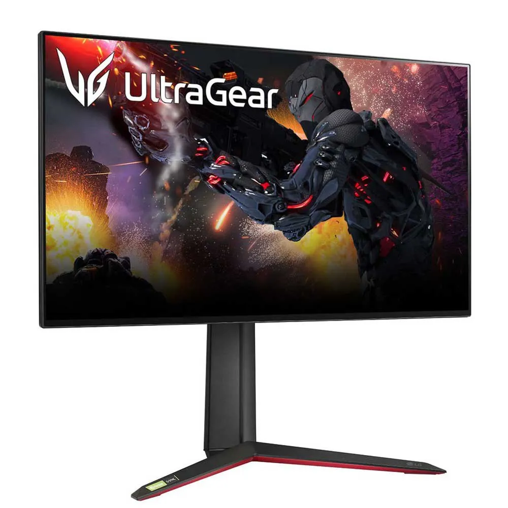

Ficha Técnica: Placa Base MSI MAG Z790 TOMAHAWK WIFI
Periférico de visualización de alto rendimiento.
El monitor gaming es un componente vital para la experiencia de juego y trabajo profesional.Este modelo ultra-wide ofrece una inmersion completa gracias a su curvatura y su alta tasa de refresco.
Imagen del periferico
imagenes

Características del Panel.
Tamaño y curvatura:34 pulgadas con curva 1000R
Resolucion y ratio:1920x1080 3440x1440 (WQHD) con ratio 21:9
permite mas espacio de trabajo horizontal
aumenta la inmersion en juegos de simulacion
Tasa de refresco:Frecuencia de hasta 165 Hz/li>
Tecnología de sincronizacion:Compatible con Nvidia G-SYNC y AMD free sync
Tabla: Conectividad y puertos
RESUMEN DE PUERTOS (E/S)
Tipo de puerto
Cantidad
DisplayPort 1.4
1
HDM!1.1
2
USB 3.0
3
Enlaces y Contacto
Encuesta Rápida de Interés
Tu Nombre o Email (Caja de Texto):
Ej: alu@mail.com
¿En qué otros chipsets estás interesado? (Selector Múltiple):
AMD X670E
Enviar Respuestas